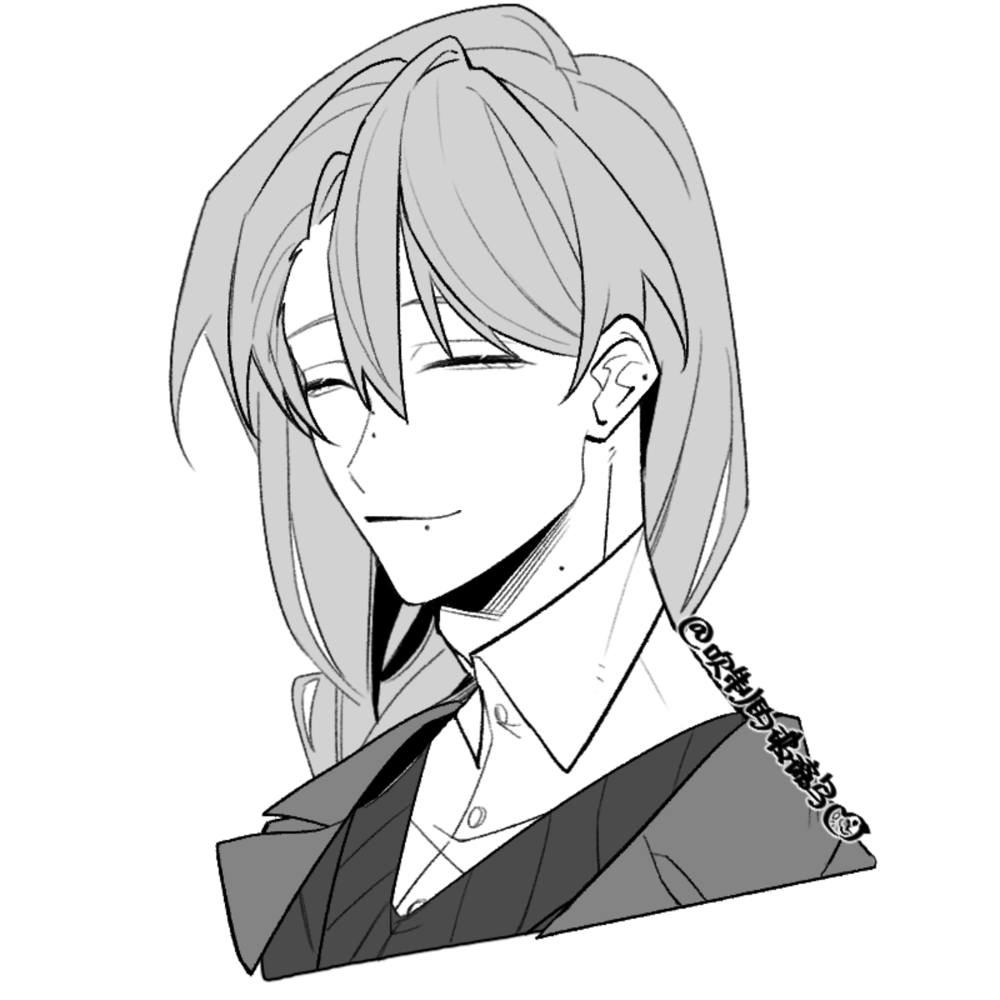

【一表】
ID：相葉五月半
称呼：胖x5
签面：■安心
——
姓名：灰尾刻人（はいお ときひと）
性别：男
年龄及学级：16岁2年级
外貌：
身高173cm，体型不可能纤细到哪里去毕竟夺旗赛也需要锻炼体能。
发色为浅灰，瞳色为青碧色。
特征为眯眯眼，长及胸口的侧低麻花辫（死亡发型），以及分别位于鼻子、唇下和右耳处的痣。

性格：
犬队の刻板印象糸目腹黒キャラ，时常带着微笑的长发青年，得意技为读空气、黑暗兵法、個人情報の不正取得以及微笑着讲出令人不寒而慄的话。温柔亲切的外表下有着精明狡黠又好胜的一面。
司职补助，重视团队的和谐，作为后场成员总是在视野最广阔的地方默默观察着队友们。对队友们的状况变化很是敏感，在训练时当察觉到队友们的疲惫或沮丧时会主动喊停，为其递去毛巾饮料或是开导对方。在队伍中是宛若长姊(?)长兄一般让人感到安心的存在，与团队经理（如果有的话）一同料理着包括记账在内的一系列后勤事务。
「引导」的红脸白脸好搭档，在必要时会配合对方自如切换到善人或恶人来对付这群一年级小孩。与此同时也深知其单细胞本质，所以经常不着痕迹地给「引导」下暗示诱导对方做出自己所期望的判断或决策。
对夺旗赛怀有纯粹的热爱，内心却被对未来的焦虑所困扰。父母对其花费大量时间在看似无用的竞技上早已不满，因此尽管只是二年级却视今年为最后的机会。若今年无法夺冠，父亲将会强制要求其彻底放弃这条道路，退队并全力备考东大。
对胜利的强烈执着逐渐开始影响其在赛场上的行动与判断。当「胜利」与「队友的状态」无法兼顾时，极有可能会优先考虑「胜利」。
认为团队の連携才是胜利的关键。死小孩们因不配合而惹他火冒三丈时会一反常态直球讲出「融不进来就滚」这种话。亦会把源力操控、体能或合作意识稍弱的成员笑着拉去做严苛的地狱特训。
补充：
源力：
■時流遅滞（じりゅうちたい）
在特定范围内创造出自由调整时间流动的领域的能力。
领域内的一切（包括源力）都会受到影响，无论敌我，行动、攻击和反应速度均会发生变化。
尽管能力名为時流遲滯但实际上也能用來加速时间，但加速时精神力的消耗将会大幅增加。
展开领域的地点须为能力者视线可及范围内。
领域的数量和面积取决于能力者的精神力剩余量。目前的上限最多可展开三个领域。
备注：
dbq看到「引导」在预设关系里被归到为单细胞组就擅自脑补了ta的性格总之不妥可以改🥺